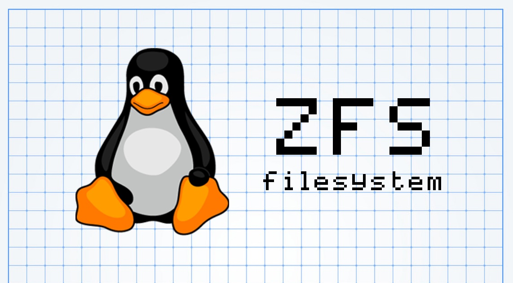
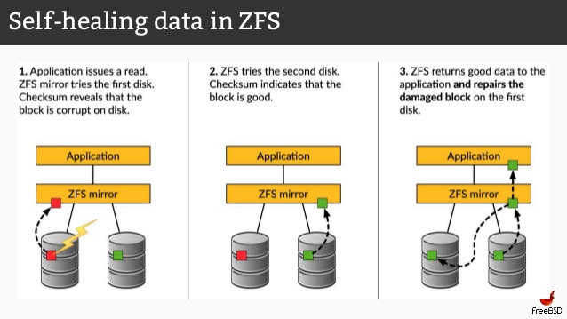
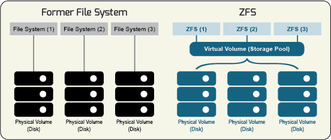

真正的文件系统终极者
ZFS文件系统的英文名称为ZettabyteFileSystem，也叫动态文件系统，是第一个128位文件系统。最初是由Sun公司为Solaris10操作系统开发的文件系统。作为OpenSolaris开源计划的一部分，ZFS于2005年11月发布，被Sun称为是终极文件系统，经历了10年的活跃开发，而最新的开发将全面开放，并重新命名为OpenZFS。ZFS是一种先进的、高度可扩展的文件系统，最初是由Sun Microsystems开发的，现在OpenZFS是项目的一部分。有这么多文件系统可用在Linux上，那自然要问ZFS有什么特别之处。不同于其它文件系统，它不仅是一个文件系统逻辑卷管理器。

1. ZFS 文件系统介绍
ZFS 文件系统是一种革新性的新文件系统，可从根本上改变文件系统的管理方式，并具有目前面市的其他任何文件系统所没有的功能和优点。ZFS 强健可靠、可伸缩、易于管理。
ZFS 非常的优秀，这是一个真正现代的文件系统，内置的功能对于处理大量的数据很有意义。现在，如果您正在考虑将 ZFS 用于您的超高速 NVMe SSD，这可能不是一个最佳选择。 它比别的文件系统要慢，不过，这完全没有问题， 它旨在存储大量的数据并保持安全。
ZFS消除了建立传统RAID阵列(独立磁盘冗余阵列)的需要。 相反，您可以创建ZFS池，甚至可以随时将驱动器添加到这些池中。ZFS池的行为操作与RAID几乎完全相同，但功能内置于文件系统中。ZFS也可以替代LVM(逻辑盘卷管理)，使您能够动态地进行分区和管理分区，而无需处理底层的细节，也不必担心相关的风险。- 这也是一个
CoW(写时复制)文件系统。 这里不会提及太多的技术性，这意味着ZFS可以保护您的数据免受逐渐损坏的影响。ZFS会创建文件的校验和，并允许您将这些文件回滚到以前的工作版本。
[1] ZFS 使其受欢迎的特性是：
- 数据完整性 —— 数据一致性和完整性通过即写即拷和校验技术保证。
- 存储空间池 —— 可用存储驱动器一起放入称为 zpool 的单个池。
- 软件 RAID —— 像发出一个命令一样，建立一个 raidz 数组。
- 内置的卷管理器 —— ZFS 充当卷管理器。
- Snapshots、克隆、压缩 —— 这些都是一些 ZFS 提供的高级功能。
[2] ZFS 的常用的术语：
- Pool
- 存储驱动器的逻辑分组，它是 ZFS 的基本构建块，从这里将存储空间分配给数据集。
- Datasets
- ZFS 文件系统的组件即文件系统、克隆、快照和卷被称为数据集。
- Mirror
- 一个虚拟设备存储相同的两个或两个以上的磁盘上的数据副本，在一个磁盘失败的情况下,相同的数据是可以用其他磁盘上的镜子。
- Resilvering
- 在恢复设备时将数据从一个磁盘复制到另一个磁盘的过程。
- Scrub
- 擦除用于一致性检验在 ZFS 像在其他文件系统如何使用 fsck。
[3] 参考链接地址：
- ZFS 官方网站地址
- Oracle Solaris ZFS 管理指南
- 如何在 Centos7 上安装和使用 ZFS
- 如何在 Ubuntu 上使用 ZFS 文件系统
- Oracle Solaris ZFS 故障排除和池恢复
2. 在 CentOS7 上安装
zfs install on centos7.8
# 需要先安装支持包EPEL仓库
# 然后在ZFS存储库上安装所需的ZFS包
$ yum localinstall --nogpgcheck http://epel.mirror.net.in/epel/7/x86_64/e/epel-release-7-5.noarch.rpm
$ yum localinstall --nogpgcheck http://archive.zfsonlinux.org/epel/zfs-release.el7.noarch.rpm
# /etc/yum.repos.d/zfs.repo
[zfs]
name=ZFS on Linux for EL 7 - dkms
baseurl=http://download.zfsonlinux.org/epel/7/$basearch/
enabled=0
metadata_expire=7d
gpgcheck=1
gpgkey=file:///etc/pki/rpm-gpg/RPM-GPG-KEY-zfsonlinux
[zfs-kmod]
name=ZFS on Linux for EL 7 - kmod
baseurl=http://download.zfsonlinux.org/epel/7/kmod/$basearch/
enabled=1
metadata_expire=7d
gpgcheck=1
gpgkey=file:///etc/pki/rpm-gpg/RPM-GPG-KEY-zfsonlinux
# 现在安装内核开发和zfs包
# 内核开发的软件包是需要ZFS建立模块和插入到内核中
$ sudo yum install epel-release
$ sudo yum install kernel-devel zfs
3. 在 Ubuntu18.04 上安装
zfs install on ubutu18.04
# Ubuntu16.04LTS
$ sudo apt install zfs
# Ubuntu17.04及以后
# 在Ubuntu上安装ZFS非常简单
$ sudo apt install zfsutils
4. 在 ZFS 池的常用操作
我们这里只介绍了 ZFS 的基本用法 => 官方地址
ZFS 会在您的池的根文件系统中创建一个目录。 您可以使用 GUI 文件管理器或 CLI 按名称浏览它们。ZFS 非常强大，还有很多其它的东西可以用它来做，但这些都是基础。 这是一个优秀的存储负载文件系统，即使它只是一个用于文件的硬盘驱动器的 RAID 阵列。 ZFS 在 NAS 系统上也非常出色。无论 ZFS 的稳定性和可靠性如何，在您的硬盘上实施新的功能时，最好备份您的数据。

zpool 命令是用于配置 ZFS 存储池的工具。ZFS 存储池是提供物理存储和数据复制的设备集合，用于 ZFS 数据集。所有存储池中的数据集共享相同的空间。
# 没有帮助命令
$ zpool
# 查看版本
$ zpool version
# 创建/销毁/初始化存储池
$ zpool create [-fnd] [-o property=value] ...
[-O file-system-property=value] ...
[-m mountpoint] [-R root] <pool> <vdev> ...
$ zpool destroy [-f] <pool>
$ zpool initialize [-c | -s] [-w] <pool> [<device> ...]
# 添加/移除/更新磁盘设备
$ zpool add [-fgLnP] [-o property=value] <pool> <vdev> ...
$ zpool remove <pool> <device> ...
$ zpool upgrade
$ zpool upgrade -v
$ zpool upgrade [-V version] <-a | pool ...>
# 列出存储池/显示存储池IO状态/显示存储池状态
$ zpool list [-gHLPv] [-o property[,...]] [-T d|u] [pool] ... [interval [count]]
$ zpool iostat [-gLPvy] [-T d|u] [pool] ... [interval [count]]
$ zpool status [-c [script1,script2,...]] [-igLpPstvxD] [-T d|u] [pool] ... [interval [count]]
# 标记磁盘信息
$ zpool online <pool> <device> ...
$ zpool offline [-t] <pool> <device> ...
$ zpool clear [-nF] <pool> [device]
$ zpool reopen <pool>
# 将新设备附加/分离/替换/分离磁盘到现有的ZFS存储池设备上
$ zpool attach [-f] [-o property=value] <pool> <device> <new-device>
$ zpool detach <pool> <device>
$ zpool replace [-f] [-o property=value] <pool> <device> [new-device]
$ zpool split [-gLnP] [-R altroot] [-o mntopts] [-o property=value] <pool> <newpool> [<device> ...]
# 用于监视和管理ZFS存储池中的resilvering过程
$ zpool resilver <pool> ...
# 开始/暂停数据校验(检查数据完整性的最简单的方法)
$ zpool scrub [-s | -p] [-w] <pool> ...
# 在ZFS存储池中启动TRIM操作，以回收未分配的空间
$ zpool trim [-dw] [-r <rate>] [-c | -s] <pool> [<device> ...]
# 导入/导出存储池
$ zpool import [-d dir] [-D]
$ zpool import [-d dir | -c cachefile] [-F [-n]] <pool | id>
$ zpool import [-o mntopts] [-o property=value] ...
[-d dir | -c cachefile] [-D] [-f] [-m] [-N] [-R root] [-F [-n]] -a
$ zpool import [-o mntopts] [-o property=value] ...
[-d dir | -c cachefile] [-D] [-f] [-m] [-N] [-R root] [-F [-n]]
<pool | id> [newpool]
$ zpool export [-af] <pool> ...
$ zpool reguid <pool>
# 查看日志信息
$ zpool history [-il] [<pool>] ...
$ zpool events [-vHfc]
# 获取和设置信息
$ zpool get [-pH] <"all" | property[,...]> <pool> ...
$ zpool set <property=value> <pool>
# 将所有内存中的脏数据写入主存储池
$ zpool sync [pool] ...
# 等待后台活动完成
$ zpool wait [-Hp] [-T d|u] [-t <activity>[,...]] <pool> [interval]
# 清除ZFS存储池设备上的标签信息
$ zpool labelclear [-f] <vdev>
# 在ZFS存储池上创建一个检查点
$ zpool checkpoint [-d [-w]] <pool> ...
4.1 创建和销毁池
- 创建池:
zpool create -f <pool name> <dev>- 销毁池:
zpool destroy <pool name>
- 环境准备
[root@li1467-130 ~]# ls -l /dev/sd*
brw-rw---- 1 root disk 8, 0 Mar 16 08:12 /dev/sda
brw-rw---- 1 root disk 8, 16 Mar 16 08:12 /dev/sdb
brw-rw---- 1 root disk 8, 32 Mar 16 08:12 /dev/sdc
brw-rw---- 1 root disk 8, 48 Mar 16 08:12 /dev/sdd
brw-rw---- 1 root disk 8, 64 Mar 16 08:12 /dev/sde
brw-rw---- 1 root disk 8, 80 Mar 16 08:12 /dev/sdf
- 创建池 => zfspool
# 创建一个池的驱动器
# zpool create <pool name> <dev>....
$ sudo zpool create -f zfspool sdc sdd sde sdf
# zpool状态的命令显示可用池的状态
$ sudo zpool status
pool: zfspool
state: ONLINE
scan: none requested
config:
NAME STATE READ WRITE CKSUM
zfspool ONLINE 0 0 0
sdc ONLINE 0 0 0
sdd ONLINE 0 0 0
sde ONLINE 0 0 0
sdf ONLINE 0 0 0
errors: No known data errors
# 验证如果池创建成功
# 使用zpool创造了一个池的名字zfspool大小3.7GB的空间，同时挂载在/zfspool
$ df -h
Filesystem Size Used Avail Use% Mounted on
/dev/sda 19G 1.4G 17G 8% /
devtmpfs 488M 0 488M 0% /dev
tmpfs 497M 0 497M 0% /dev/shm
tmpfs 497M 50M 447M 11% /run
tmpfs 497M 0 497M 0% /sys/fs/cgroup
tmpfs 100M 0 100M 0% /run/user/0
zfspool 3.7G 0 3.7G 0% /zfspoolv
- 销毁池 => zfspool
# 销毁一个地址池
$ sudo zpool destroy zfspool
4.2 添加/删除/更新磁盘
- 添加池:
zpool add [-fgLnP] [-o property=value] <pool> <vdev> ...- 删除池:
zpool remove <pool> <device> ...- 更新池:
zpool upgrade
- 添加磁盘
# 您也可以随时将驱动器添加到池中
$ sudo zpool add zfspool -f /dev/sdx
- 删除磁盘
# 您也可以随时将驱动器从池中删除
$ sudo zpool remove zfspool -f /dev/sdx
- 更新池
# 当你更新ZFS时，你也需要更新你的池
# 更新指定池
$ sudo zpool upgrade zfspool
# 更新全部池
$ sudo zpool upgrade -a
4.3 快速创建 RAID 池
来来来，你要高级操作来了！
- [1] RAID0
RAID0 只是把你的硬盘集中到一个池子里面，就像一个巨大的驱动器一样。 它可以提高你的驱动器速度（数据条带化后，并行访问，可以提高文件读取速度）但是如果你的驱动器有损坏，你可能会失丢失数据。要使用 ZFS 实现 RAID0，只需创建一个普通的池。
# RAID0
$ sudo zpool create -f zfspool /dev/sdc /dev/sdd
- [2] RAID1(镜像)
您可以在 ZFS 中使用 mirror 关键字来实现 RAID1 功能。 RAID1 会创建一个一对一的驱动器副本。 这意味着您的数据一直在备份。 它也提高了性能。 当然，你将一半的存储空间用于了复制。
# RAID1
$ sudo zpool create -f zfspool mirror /dev/sdc /dev/sdd
- [3] RAID5/RAIDZ1
ZFS 将 RAID5 功能实现为 RAIDZ1。 RAID5 要求驱动器至少是 3 个。并允许您通过将备份奇偶校验数据写入驱动器空间的 1/n（n 是驱动器数），留下的是可用的存储空间。 如果一个驱动器发生故障，阵列仍将保持联机状态，但应尽快更换发生故障的驱动器。
# RAID5/RAIDZ
$ sudo zpool create -f zfspool raidz1 /dev/sdc /dev/sdd /dev/sde
- [4] RAID6/RAIDZ2
RAID6 与 RAID5 几乎完全相同，但它至少需要四个驱动器。 它将奇偶校验数据加倍，最多允许两个驱动器损坏，而不会导致阵列关闭。
# RAID6/RAIDZ2
$ sudo zpool create -f zfspool raidz2 /dev/sdc /dev/sdd /dev/sde /dev/sdf
- [5] RAID10(条带化镜像)
RAID10 旨在通过数据条带化提高存取速度和数据冗余来成为一个两全其美的解决方案。 你至少需要四个驱动器，但只能使用一半的空间。 您可以通过在同一个池中创建两个镜像来创建 RAID10 中的池
# RAID10
$ sudo zpool create -f zfspool mirror /dev/sdc /dev/sdd mirror /dev/sde /dev/sdf
4.4 查看 zpool 池状态
主要用于查看和排除问题使用的命令
# 查看池状态
$ sudo zpool status
$ sudo zpool status -x
# 查看池状态
$ sudo zpool list
# 查看池状态
$ sudo zpool get all
# 显示以前修改了池状态信息
$ sudo zpool history
# 对应信息解释
$ sudo zpool status
pool: data2 # 池的名称
state: ONLINE # 池的当前运行状况
scan: scrub repaired 0 in 0h39m with 0 errors on Sun Dec 8 01:03:48 2019
config: # 发出读取请求时出现I/O错误|发出写入请求时出现I/O错误|校验和错误
NAME STATE READ WRITE CKSUM
data2 ONLINE 0 0 0
vdd ONLINE 0 0 0
vde ONLINE 0 0 0
errors: No known data errors # 确定是否存在已知的数据错误
5. 在 ZFS 池创建快照
快照是文件系统或卷的只读副本。快照几乎可以即时创建，而且最初不占用池中的其他磁盘空间。但是，当活动数据集中的数据发生更改时，快照通过继续引用旧数据占用磁盘空间，从而阻止释放磁盘空间。
- ZFS 快照具有以下特征
- 可在系统重新引导后存留下来，理论最大快照数是
2的64次方个 - 快照直接占用存储池(从中创建这些快照的文件系统或卷所在的存储池)中的磁盘空间
- 递归快照可作为一个原递归快照可作为一个原子操作快速创建。要么一起创建快照(一次创建所有快照)，要么不创建任何快照。原子快照操作的优点是始终在一个一致的时间捕获快照数据，即使跨后代文件系统也是如此。
- 可在系统重新引导后存留下来，理论最大快照数是

5.1 创建和销毁快照
- 快照是使用
zfs snapshot命令创建的，该命令将要创建的快照的名称用作其唯一参数。
# 快照名称必须满足ZFS 组件命名要求中所述的命名要求
$ sudo zfs snapshot filesystem@snapname
$ sudo zfs snapshot volume@snapname
# 查看现在使用的zfs文件系统
$ zfs list
NAME USED AVAIL REFER MOUNTPOINT
data 1T 888G 1T /data
# 创建快照
$ sudo zfs snapshot data@2020-04-28
# 创建之后直接查看容量
$ sudo zfs list -t snapshot
NAME USED AVAIL REFER MOUNTPOINT
data@2020-04-28 221K - 1T -
# 删除一些文件之后查看容量发现USED占用很多
# 这是因为现在文件系统这些文件已经删除了，但是快照还占用着没有释放
$ zfs list -t snapshot
NAME USED AVAIL REFER MOUNTPOINT
data@2020-04-28 28.2G - 1T -
- 通过使用
-r选项为所有后代文件系统创建快照，如/data目录各个子目录都挂载了独立的zfs文件系统。
# 通过使用-r选项可为所有后代文件系统创建快照
$ sudo zfs snapshot -r data@2020-04-28
# 查看创建的快照列表
$ sudo zfs list -t snapshot -r data@2020-04-28
NAME USED AVAIL REFER MOUNTPOINT
data@2020-04-28 0 - 34K -
data/home@2020-04-28 0 - 2.00G -
data/app@2020-04-28 0 - 1.00G -
data/postgres@2020-04-28 0 - 2.00G -
- 使用
zfs destroy命令可以销毁快照
# 没有使用-r参数来创建快照
$ sudo zfs destroy data@2020-04-28
# 使用-r参数来创建快照的话，需要先删除下层快照
$ sudo zfs destroy data@2020-04-28
cannot destroy 'data@2020-04-28': filesystem has children
use '-r' to destroy the following datasets:
data/home@2020-04-28
data/app@2020-04-28
data/postgres@2020-04-28
# 删除下层快照
$ sudo zfs destroy data/home@2020-04-28
$ sudo zfs destroy data/app@2020-04-28
$ sudo zfs destroy data/postgres@2020-04-28
$ sudo zfs destroy data@2020-04-28
- 保持 ZFS 快照顾名思义，就是保持快照防止它被不小心销毁了。每个快照都有一个关联的用户引用计数，其初始值为
0。在一个快照上设置一个保持标志时，此计数递增1；释放一个保持标志时，此计数递减1。
# 保持一个快照或一组快照
$ sudo zfs hold keep data@2020-04-28
# 使用-r选项递归保持所有后代文件系统的快照
$ sduo zfs hold -r keep data@2020-04-28
# 防止快照不小心销毁掉了
$ sudo zfs destroy data@2020-04-28
cannot destroy 'data@2020-04-28': dataset is busy
# 要销毁保持的快照，须使用-d选项
$ sudo zfs destroy -d data@2020-04-28
# 显示受保持的快照列表
$ sudo zfs holds data@2020-04-28
$ sudo zfs holds -r data@2020-04-28
# 释放对一个快照或一组快照的保持
$ sudo zfs release -r keep data@2020-04-28
# 释放快照后销毁快照
$ sudo zfs destroy -r data@2020-04-28
- 重命名 ZFS 快照顾名思义，就是重命名快照，但是必须在从中创建它们的池和数据集中对它们进行重命名。
# 单个快照重命名
$ sudo zfs rename data@2020-04-28 data@2020-04-27
# 以递归方式重命名快照
$ sudo zfs rename -r data@2020-04-28 @2020-04-27
5.2 显示和访问快照
- 可以通过
listsnapshots池属性启用或禁用zfs list输出中的快照列表显示。缺省情况下，此属性处于启用状态。如果禁用了此属性,则可以使用zfs list -t snapshot命令来显示快照信息。或者启用listsnapshots池属性。
# 获取属性
$ sudo zpool get listsnapshots data
NAME PROPERTY VALUE SOURCE
data listsnapshots on default
# 设置属性
$ sudo zpool set listsnapshots=off data
# 查看已经修改了
$ sudo zpool get listsnapshots data
NAME PROPERTY VALUE SOURCE
data listsnapshots off local
- 可以列出快照，也可以列出为特定文件系统创建的快照。
# 默认显示
$ sudo zfs list -t snapshot -r tank/home
NAME USED AVAIL REFER MOUNTPOINT
tank/home/cindy@today 0 - 2.00G -
tank/home/mark@today 0 - 2.00G -
tank/home/matt@tuesday 20K - 1.00G -
# 列出为特定文件系统创建的快照
$ sduo zfs list -r -t snapshot -o name,creation tank/home
NAME CREATION
tank/home/cindy@today Fri May 6 6:32 2020
tank/home/mark@today Fri May 6 6:22 2020
tank/home/matt@tuesday Tue May 3 6:27 2020
5.3 快照恢复和回滚
- 快照恢复即我们没有办法直接将文件系统回滚到之前创建快照的时候，比如在该文件系统同时产生了多个服务的数据，而我们只需要将一个服务的数据进行回滚操作。这个时候就需要，我们手动恢复数据了。
# 将快照挂载到一个临时目录，手动进行数据恢复
$ sudo mount -t zfs data@2020-04-28 /mnt/recovery
- 可以使用
zfs rollback命令放弃自特定快照创建以来对文件系统所做的全部更改。文件系统恢复到创建快照时的状态。缺省情况下，该命令无法回滚到除最新快照以外的快照。要回滚到早期快照，必须销毁所有的中间快照。可以通过指定-r选项销毁早期的快照。如果存在任何中间快照的克隆，则还必须指定-R选项以销毁克隆。
# 示例快照列表
$ sudo zfs list -t snapshot -r tank/home
NAME USED AVAIL REFER MOUNTPOINT
tank/home/matt@today 0 - 2.00G -
tank/home/mark@today 0 - 2.00G -
tank/home/matt@tuesday 20K - 1.00G -
tank/home/matt@wednesday 20K - 1.00G -
tank/home/matt@thursday 0 - 1.00G -
# 会将tank/home/matt文件系统回滚到tuesday快照
$ sudo zfs rollback tank/home/matt@tuesday
cannot rollback to 'tank/home/matt@tuesday': more recent snapshots exist
use '-r' to force deletion of the following snapshots:
tank/home/matt@wednesday
tank/home/matt@thursday
# 删除中间的快照即可恢复到之前的版本
$ sudo zfs rollback -r tank/home/matt@tuesday
- 确定 ZFS 快照的差异即可以通过
diff命令来对比快照之间的文件差异。
# 确定两个快照之间的差异
$ sudo zfs diff tank/home/tim@snap1 tank/home/timh@snap2
M /tank/home/tim/
+ /tank/home/tim/fileB
6. 在 ZFS 池管理设备
很少会使用到，如果使用到的话，可以查看查看链接！
- 一旦创建一个池，从池中可以添加或删除热备件和缓存设备，从镜像池替换设备中连接或者分离，但是冗余和
raidz设备不能从池中删除。
# 创建一个池称为testpool成的两个设备(sdc和sdd)
$ sudo zpool create -f testpool sdc sdd
# 另一个设备sde将被添加到这里
$ sudo zpool add testpool sde
# 正如前面提到的，我不能删除这个新添加的设备(因为它是一个冗余或raidz池)
$ sudo zpool remove testpool sde
cannot remove sde: only inactive hot spares, cache, top-level, or log devices can be removed
# 标记磁盘状态为运行
$ sudo zpool online testpool sdc
# 在有故障的时候，标记磁盘状态为非运行
$ sudo zpool offline testpool sdc
- 作为组合的文件系统和卷管理器，
ZFS可以呈现许多不同的故障。
# 但我可以在这个池添加一个空闲磁盘和删除它
$ sudo zpool add testpool spare sdf
# 如果已使用热备件自动替换了故障磁盘，则您可能需要在替换故障磁盘后分离该热备件
# 例如: 如果替换故障磁盘后，sdf仍为活动热备件，则对其进行附加
# 例如: 如果替换故障磁盘后，sdf仍为活动热备件，则对其进行分离
$ sudo zpool attach testpool sdf
$ sudo zpool detach testpoll sdf
# 当设备发生故障或损坏，我们可以使用replace命令替换故障磁盘sdc
$ sudo zpool replace testpool sdc sdd
# 在镜像配置当中我们将爆力的测试一个设备
$ sudo zpool create -f testpool mirror sdd sde
# 这将创建一个镜像磁盘池组成的SDD和SDE
# 现在，让我们故意损坏SDD写零到磁盘中
$ sudo dd if=/dev/zero of=/dev/sdd
# 我们将使用“scrub”命令来检测这种损坏
$ sudo zpool scrub testpool
# 现在我们用SDC替换SDD
$ sudo zpool replace testpool sdd sdc; zpool status
7. 在 ZFS 池的迁移
很少会使用到，如果使用到的话，可以查看查看链接！
- 我们可以使用导出和导入命令在不同的主机之间迁移存储池，需要注意的是，在池中使用的磁盘应该从两个系统中可用，才能正常迁移数据。
[root@li1467-130 ~]# zpool export testpool
[root@li1467-130 ~]# zpool status
no pools available
- 使用
zpool import命令列出所有可以利用的池。
[root@li1467-131 ~]# zpool import
pool: testpool
id: 3823664125009563520
state: ONLINE
action: The pool can be imported using its name or numeric identifier.
config:
testpool ONLINE
sdc ONLINE
sdd ONLINE
sde ONLINE
- 执行这个系统命令，现在导入要求的池。
[root@li1467-131 ~]# zpool import testpool
[root@li1467-131 ~]# zpool status
pool: testpool
state: ONLINE
scan: none requested
config:
NAME STATE READ WRITE CKSUM
testpool ONLINE 0 0 0
sdc ONLINE 0 0 0
sdd ONLINE 0 0 0
sde ONLINE 0 0 0
errors: No known data errors